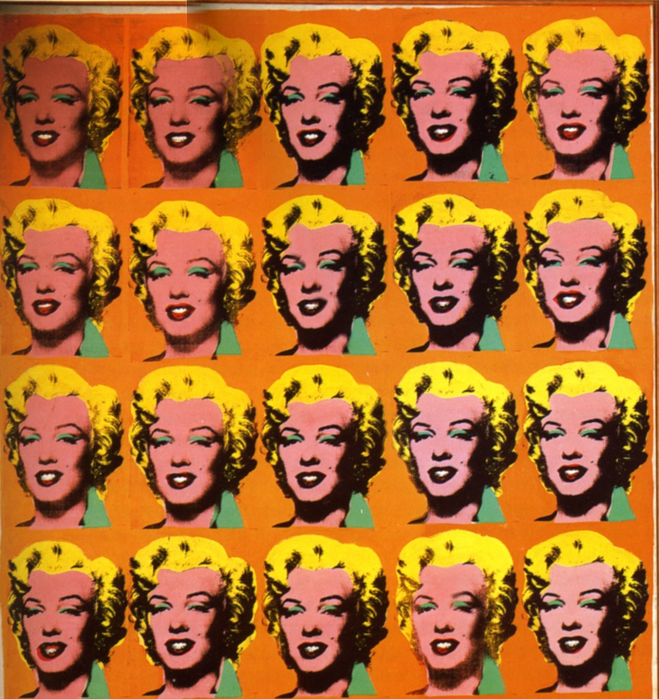
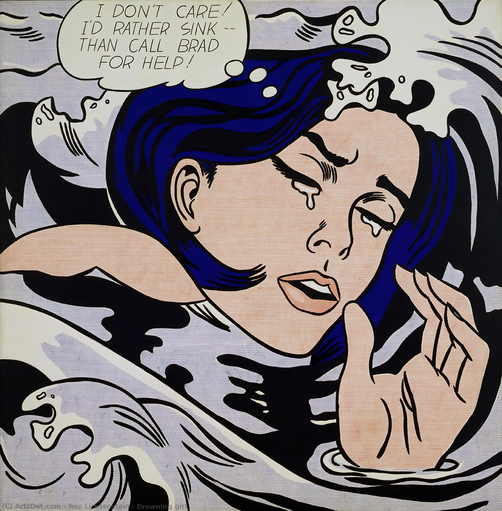
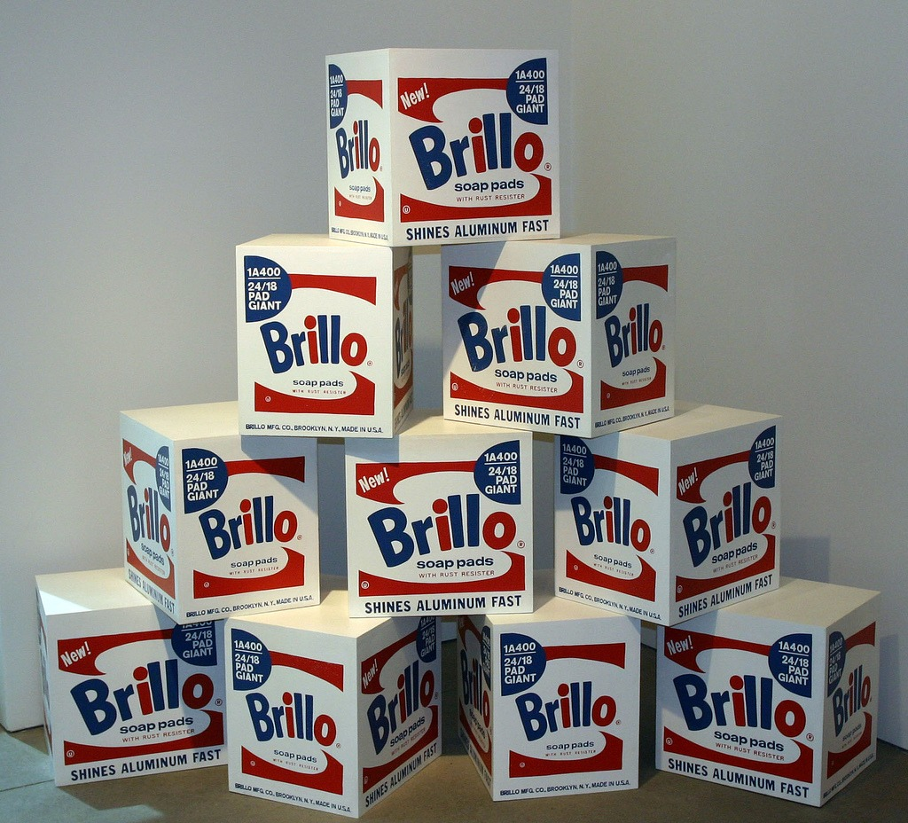
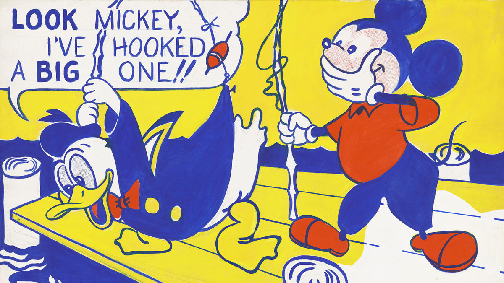
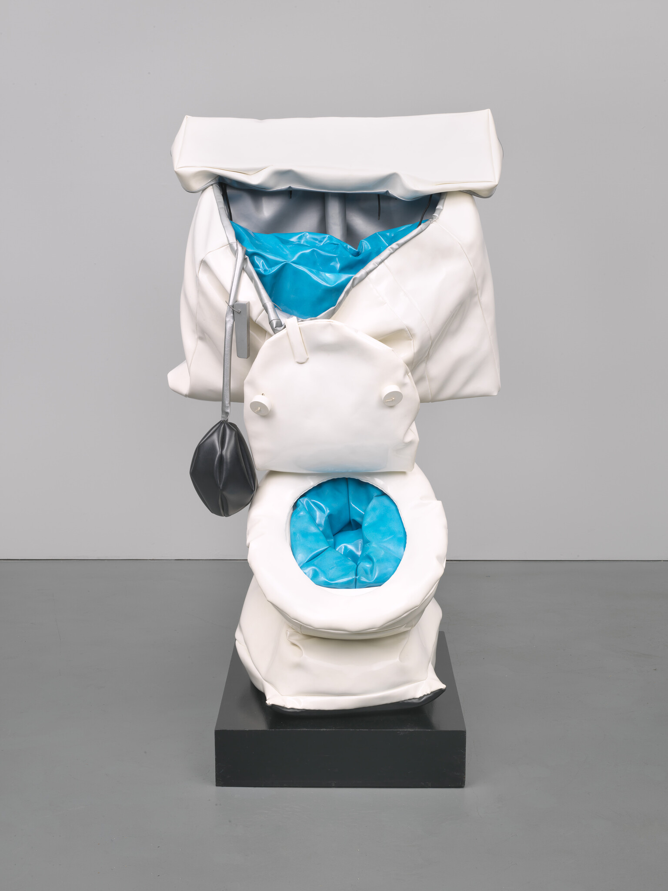
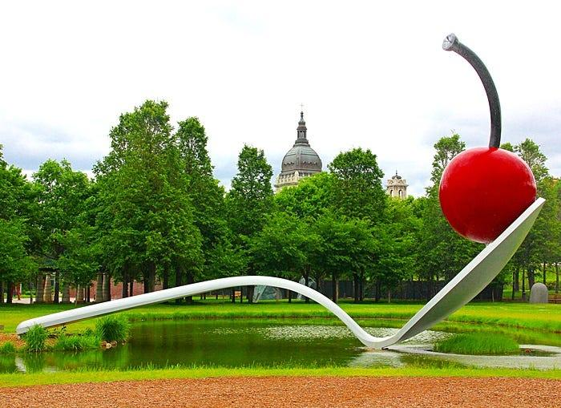

GALERÍA
Colores intensos, cultura popular, publicidad, cómics y objetos cotidianos. Una selección visual inspirada en el universo del Pop Art.






Colores intensos, cultura popular, publicidad, cómics y objetos cotidianos. Una selección visual inspirada en el universo del Pop Art.





